Tài liệu bài tập
Notebook có output Run all mới trên Colab T4 ngày 20/11/2026. Colab mở notebook từ nhánh main trên GitHub.
Notebook
Đủ 11 mục theo mẫu Oxford Pets; output và kết luận từ lần chạy mới.
PDF report
Báo cáo riêng của bài tập lớn này
YouTube
Video Public hoặc Unlisted · khuyến nghị 5–10 phút
Mô tả tập dữ liệu và EDA
Intel Image Classification v2; các lớp buildings, forest, glacier, mountain, sea, street. Tập gốc có 14,034 ảnh train và 3,000 ảnh test. Ảnh seg_pred không tham gia thực nghiệm có giám sát.
Khám phá ảnh gốc

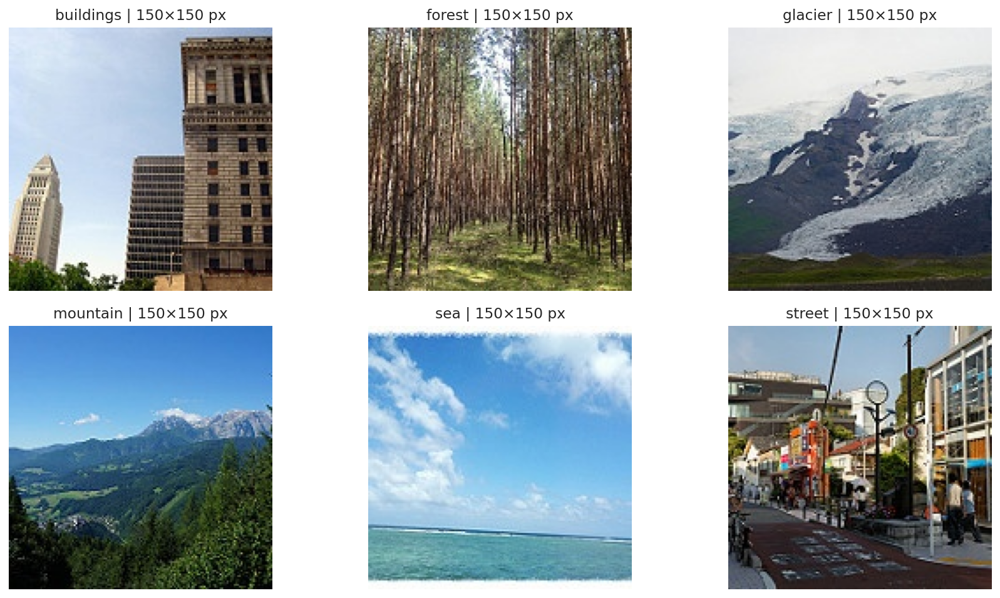

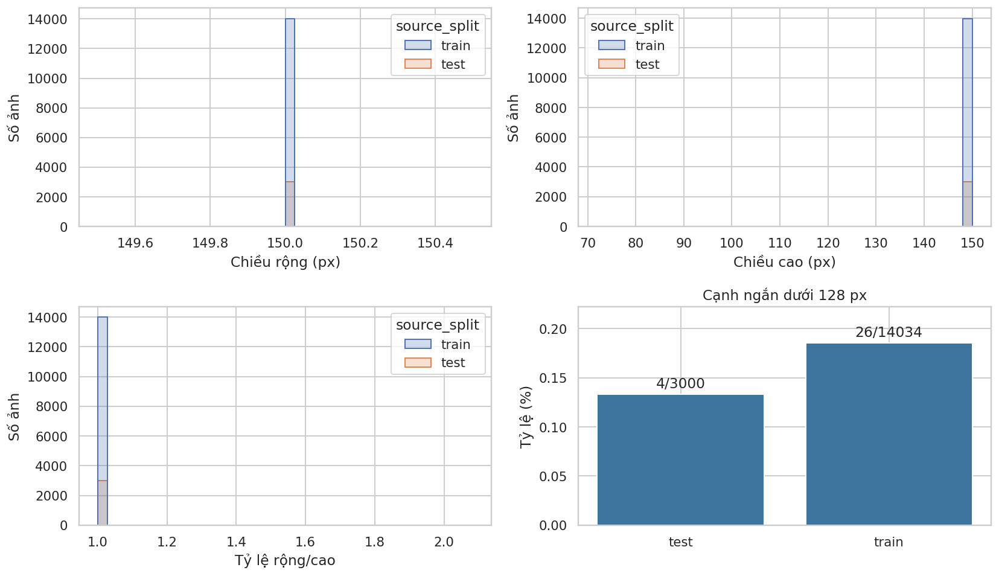

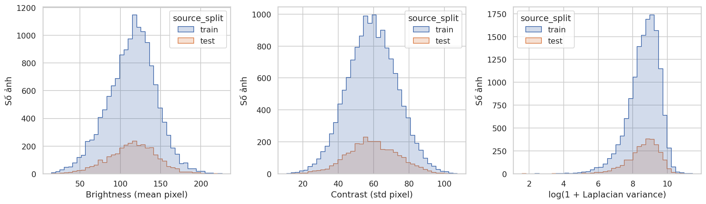

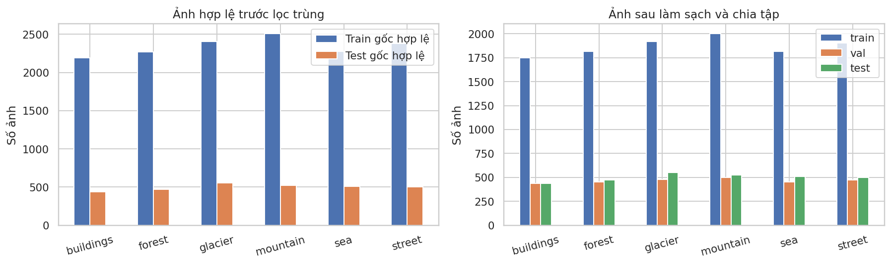
Quyết định từ EDA
Hash pixel phát hiện trùng chính xác; không bao quát gần trùng. Ảnh tối hoặc ít cạnh cần xem nội dung trước khi quyết định xử lý. Resize lên 224×224 không tạo thêm chi tiết.
Chuẩn bị dữ liệu
Đã loại 28 ảnh train: 20 ảnh thuộc nhóm mâu thuẫn nhãn; 3 ảnh trùng test; 5 bản sao cùng nhãn. Giữ test gốc hợp lệ; chia train/validation stratified seed 42.
Các tập sử dụng
| Split | Số ảnh |
|---|---|
| train | 11204 |
| val | 2802 |
| test | 3000 |
Transform và augmentation
| Tập | Preprocessing |
|---|---|
| Train | RandomResizedCrop 224, lật ngang, ColorJitter nhẹ, chuẩn hóa ImageNet |
| Validation/Test | Resize, center crop 224 và chuẩn hóa theo pretrained weights |

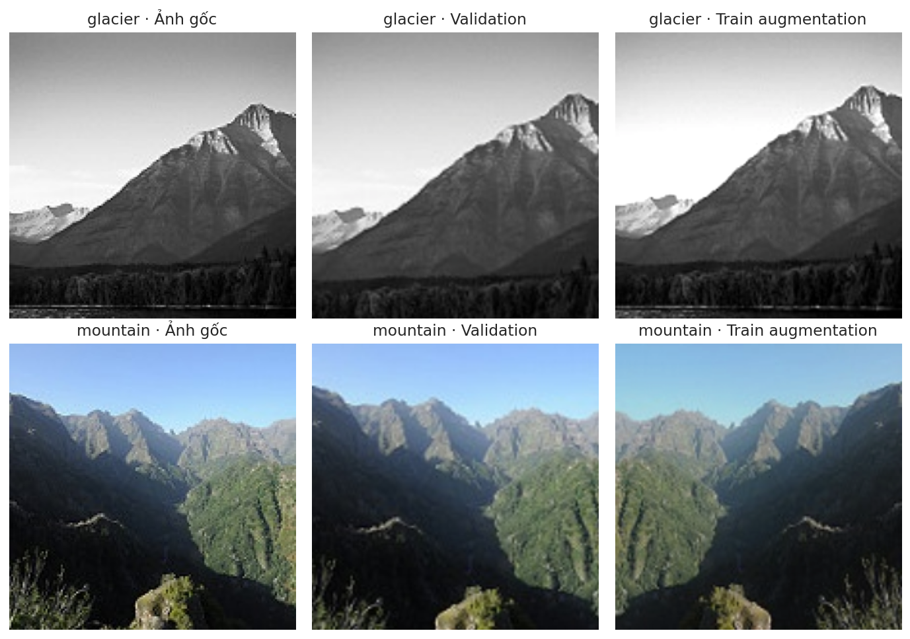
Mô hình và kết quả
Cả hai mô hình dùng ImageNet pretrained và head sáu lớp. Huấn luyện 3 epoch head (backbone frozen/eval), sau đó tối đa 15 epoch fine-tuning với LR backbone 1e-5, LR head 1e-4. Batch 16, accumulation 2, hai worker. Chọn checkpoint bằng validation macro-F1; hòa điểm chọn head; patience fine-tuning 4.

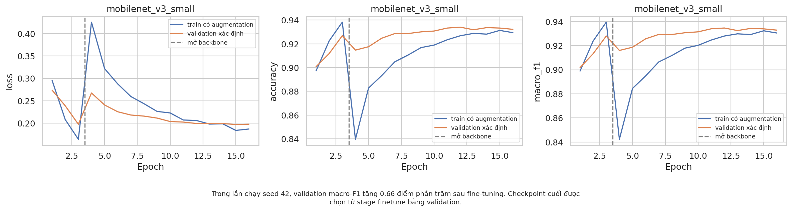

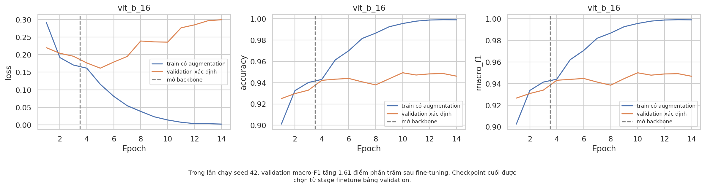
Checkpoint và hiệu quả fine-tuning
| Mô hình | Stage | Epoch tốt nhất | Val F1 (%) | Được chọn |
|---|---|---|---|---|
| MobileNetV3-Small | classifier | 3 | 92.80 | — |
| MobileNetV3-Small | fine-tuning | 9 | 93.46 | Có |
| ViT-B/16 | classifier | 3 | 93.39 | — |
| ViT-B/16 | fine-tuning | 7 | 95.00 | Có |
Checkpoint cuối trên ba tập, preprocessing xác định
| Mô hình | Split | Loss | Accuracy (%) | F1 macro (%) |
|---|---|---|---|---|
| MobileNetV3-Small | train | 0.1259 | 95.65 | 95.73 |
| MobileNetV3-Small | val | 0.1990 | 93.40 | 93.46 |
| MobileNetV3-Small | test | 0.2161 | 92.37 | 92.53 |
| ViT-B/16 | train | 0.0059 | 99.84 | 99.84 |
| ViT-B/16 | val | 0.2355 | 94.93 | 95.00 |
| ViT-B/16 | test | 0.2430 | 94.50 | 94.63 |
So sánh trên cùng test
| Mô hình | Accuracy (%) | P macro (%) | R macro (%) | F1 macro (%) | Tham số | Train (s) |
|---|---|---|---|---|---|---|
| MobileNetV3-Small | 92.37 | 92.49 | 92.63 | 92.53 | 1,524,006 | 1829.8 |
| ViT-B/16 | 94.50 | 94.62 | 94.65 | 94.63 | 85,803,270 | 2544.6 |

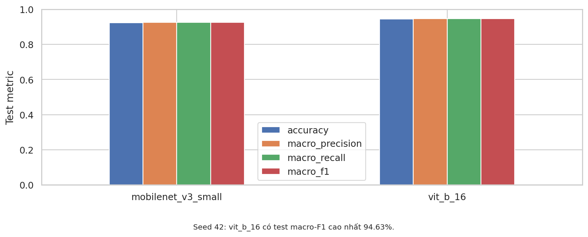
Kết quả từng lớp trên test
| Mô hình | Lớp | Precision (%) | Recall (%) | F1 (%) | Support |
|---|---|---|---|---|---|
| MobileNetV3-Small | buildings | 92.38 | 94.28 | 93.32 | 437 |
| MobileNetV3-Small | forest | 98.32 | 98.52 | 98.42 | 474 |
| MobileNetV3-Small | glacier | 89.56 | 83.73 | 86.54 | 553 |
| MobileNetV3-Small | mountain | 86.92 | 88.57 | 87.74 | 525 |
| MobileNetV3-Small | sea | 93.21 | 96.86 | 95.00 | 510 |
| MobileNetV3-Small | street | 94.57 | 93.81 | 94.19 | 501 |
| ViT-B/16 | buildings | 94.08 | 94.51 | 94.29 | 437 |
| ViT-B/16 | forest | 100.00 | 99.79 | 99.89 | 474 |
| ViT-B/16 | glacier | 92.31 | 88.97 | 90.61 | 553 |
| ViT-B/16 | mountain | 89.42 | 91.81 | 90.60 | 525 |
| ViT-B/16 | sea | 97.27 | 97.84 | 97.56 | 510 |
| ViT-B/16 | street | 94.63 | 95.01 | 94.82 | 501 |
Ma trận nhầm lẫn và ảnh sai

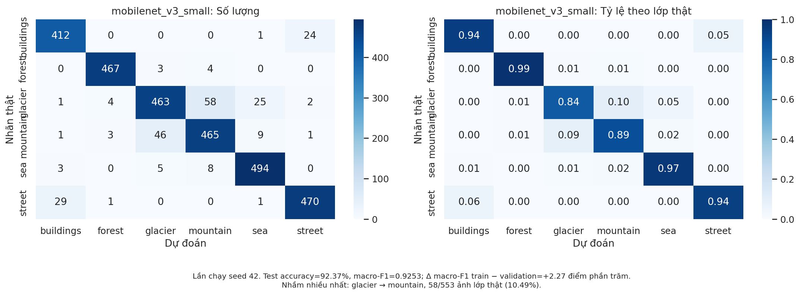

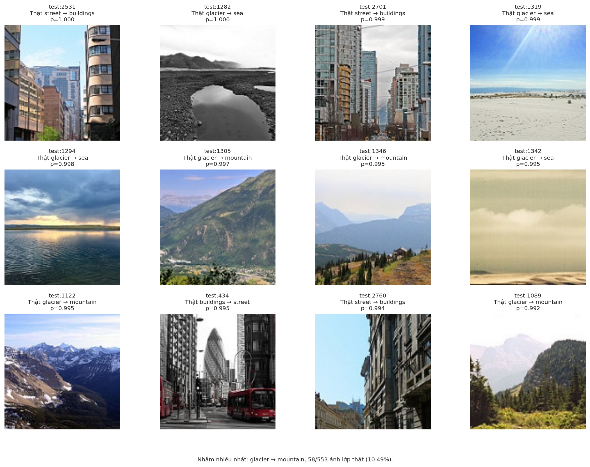

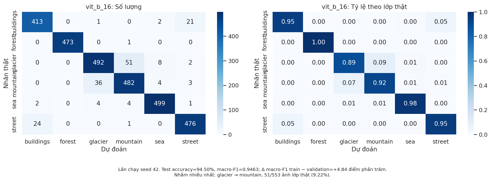

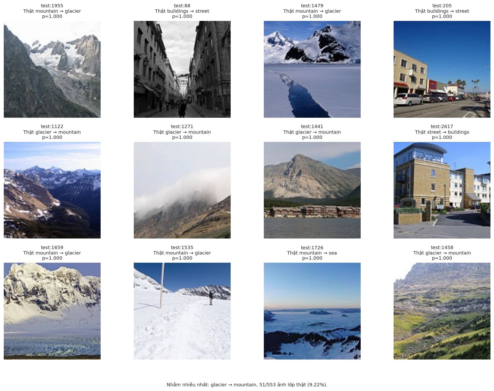
Giải thích MobileNet bằng Grad-CAM

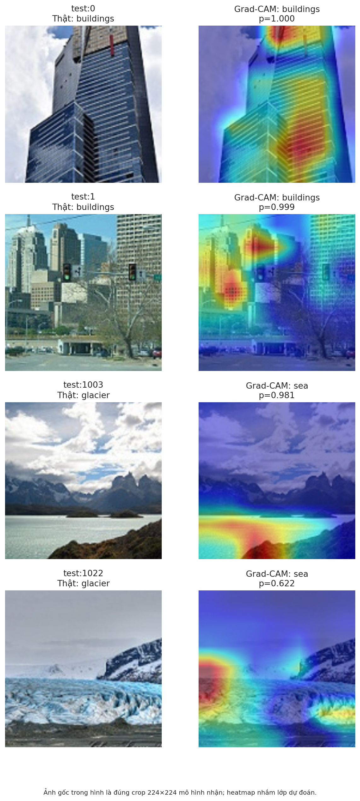
Kết luận và nguồn kết quả
Trong lần chạy seed 42 trên 3,000 ảnh test, ViT-B/16 đạt macro-F1 cao nhất 94.63%, accuracy 94.50%.
Một seed, hash pixel chưa bao quát gần trùng và crop có thể bỏ nội dung. Các thí nghiệm tiếp theo có thể chạy nhiều seed, kiểm tra gần trùng và chọn crop/augmentation bằng validation.
Nguồn và kiểm chứng
Notebook kiểm tra checkpoint, history, dự đoán và confusion matrix; metrics trên website được tính lại từ CSV.
CSV so sánh · CSV ba split · CSV từng lớp · Thông tin lần chạy · Split manifest
Nhóm SlightSeek: Phạm Duy Anh (2310139), Nguyễn Phan Tuấn Duy (2310491).